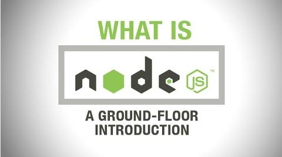

<link rel="stylesheet" type="text/css" href="style.css">
<SECTION id = "Intro">
<h2 >Introduction</h2>
<div>
<p>Node.js is an open-source, cross-platform JavaScript runtime environment for developing a diverse variety of server tools and applications. Although Node.js is not a JavaScript framework, many of its basic modules are written in JavaScript, and developers can write new modules in JavaScript. The runtime environment interprets JavaScript using Google's V8 JavaScript engine.
<br><br>
Node.js has an event-driven architecture capable of asynchronous I/O. These design choices aim to optimize throughput and scalability in Web applications with many input/output operations, as well as for real-time Web applications (e.g., real-time communication programs and browser games).
<br><br>
The Node.js distributed development project, governed by the Node.js Foundation, is facilitated by the Linux Foundation's Collaborative Projects program.
<br><br>
Corporate users of Node.js software include GoDaddy, Groupon, IBM, LinkedIn, Microsoft, Netflix, PayPal, Rakuten, SAP, Voxer, Walmart, Yahoo!, and Cisco Systems.</p>

</div>
</SECTION>